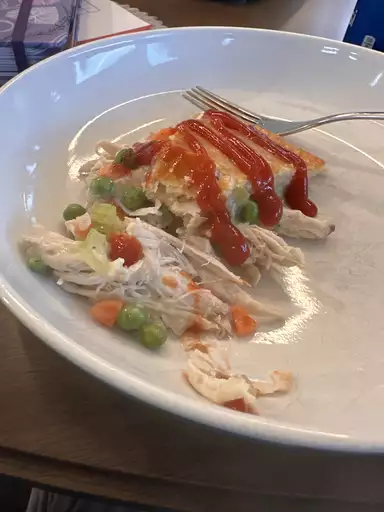

Chicken Pot Pie

Chicken Pot Pie
A delicious chicken pie made from scratch with carrots, peas, and celery in a pre-made crust. Add thyme and poultry seasoning for more flavor.
Ingredients
- 1 pound skinless, boneless chicken breast halves - cubed
- 1 cup sliced carrots
- 1 cup frozen green peas
- ½ cup sliced celery
- ⅓ cup butter
- ⅓ cup chopped onion
- ⅓ cup all-purpose flour
- ½ teaspoon salt
- ¼ teaspoon black pepper
- ¼ teaspoon celery seed
- 1 ¾ cups chicken broth
- ⅔ cup milk
- 2 (9 inch) unbaked pie crusts
Steps
- Gather all ingredients and preheat the oven to 425 degrees F (220 degrees C.)
-
Combine chicken, carrots, peas, and celery in a saucepan; add water to cover and bring to a boil. Boil for 15 minutes, then remove from the heat and drain.
-
While the chicken is cooking, melt butter in another saucepan over medium heat. Add onion and cook until soft and translucent, 5 to 7 minutes. Stir in flour, salt, pepper, and celery seed
- Slowly stir in chicken broth and milk.
-
Reduce heat to medium-low and simmer until thick, 5 to 10 minutes. Remove from heat and set aside.
-
Place chicken and vegetables in the bottom pie crust. Pour hot liquid mixture over top.
-
Cover with top crust, seal the edges, and cut away any excess dough. Make several small slits in the top crust to allow steam to escape.
-
Bake in the preheated oven until pastry is golden brown and filling is bubbly, 30 to 35 minutes. Cool for 10 minutes before serving.
- Serve immediately and enjoy!